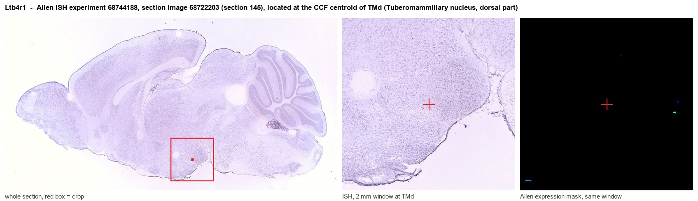

Ltb4r1
Leukotriene B4 receptor 1 (LTB4-R 1) (LTB4-R1)
Spatial tier: STRICT_EXCLUSIVE · Class: GPCR · Top region: TMd (Tuberomammillary nucleus, dorsal part) · Positive regions: 11/554
44.9Discovery Score
36.1Targetability Score
CEvidence grade C
What this means: Ltb4r1: predicted fine-region profile is strict-exclusive, with 11 positive regions out of 554 (limit 12); direct spatial validation is required.
Function in TMd: evidence, prediction, innovation
- Gene function
- Ltb4r1 encodes BLT1, the high-affinity GPCR for leukotriene B4, a 5-lipoxygenase product; it also binds resolvin E1. Coupling to Gi and G16, it drives chemotaxis, Ca2+ mobilization and NF-kB signaling in neutrophils, T cells and macrophages, and is targeted by etalocib (LY293111).
- Region function
- The dorsal tuberomammillary nucleus contains the brain's histaminergic neurons, which project brain-wide to promote wakefulness and arousal and suppress feeding, and are silenced during sleep.
- Published in this region
- none No region-specific literature found. BLT1 is primarily a leukocyte receptor (Tager 2003), is up-regulated in cortical neurons and glia after subarachnoid haemorrhage (Ye 2016), is detected in human basal forebrain and hippocampus and elevated in Alzheimer's disease (Emre 2020), and intracerebroventricular LTB4 stimulates the HPA axis via BLT1 in rats (Zhang 2010), but none reach histaminergic TMN neurons.
- Predicted function
- Prediction: BLT1 on histaminergic TMN neurons would convert an inflammatory lipid signal, LTB4 from leukocytes or microglia, into altered arousal, coupling systemic inflammation to sickness somnolence via Gi. Local LTB4 infusion should change sleep-wake architecture; Ltb4r1 deletion in Hdc-Cre neurons should blunt LPS-induced wakefulness changes.
- Innovation
- ★★★★☆ 4/5 A potent, druggable receptor with knockout mice and antagonists, never examined in the histaminergic system that governs arousal.
- Tools
- Ltb4r1 knockout mice (BLT1-/-); agonist LTB4; antagonists U-75302, CP-105696, LY293111 (etalocib); anti-BLT1 antibodies used in brain (Ye 2016; Emre 2020); Hdc-Cre for TMN histamine neurons.
- References
Direct evidence located at the region

Allen ISH experiment 68744188, section image 68722203 (section 145): the section that contains the CCF centroid of Tuberomammillary nucleus, dorsal part according to the Allen image-to-atlas alignment (reference_to_image), with a 2 mm window around that point. Left: whole section, red box = window. Middle: ISH signal. Right: Allen's expression-mask view of the same window. open this image in the Allen viewer
Look it up yourself: Allen Mouse Brain ISH for Ltb4r1Allen reference atlas: TMd (structure 1126)ABC Atlas MERFISH viewer(in the ABC Atlas choose dataset MERFISH-C57BL6J-638850-CCF, colour cells by gene "Ltb4r1" or by parcellation_substructure "TMd")All genes confined to TMd + 3-D brain
Direct spatial evidence
MERFISH REGION LOCATOR

DIRECT ALLEN ISH

DIRECT ALLEN ISH

Regional expression figure

Predicted WMB × fine-CCF profile; not direct full-transcriptome spatial measurement.
Spatial profile
Evidence and specificity
- Evidence status
- PREDICTED_FINE
- Direct sources
- None; predicted localization only
- Exclusive threshold
- 12 positive regions out of 554
- Spatial specificity
- 0.346
- Top-region fraction
- 0.098
- Filter status
- PASS
Interpretation limits
- Cell-type-to-region projection is imputed expression, not direct spatial measurement.
- Adult reference atlases do not establish stability across age, sex, strain, state, or disease.
- Transcript abundance does not guarantee protein abundance or genetic-tool performance.